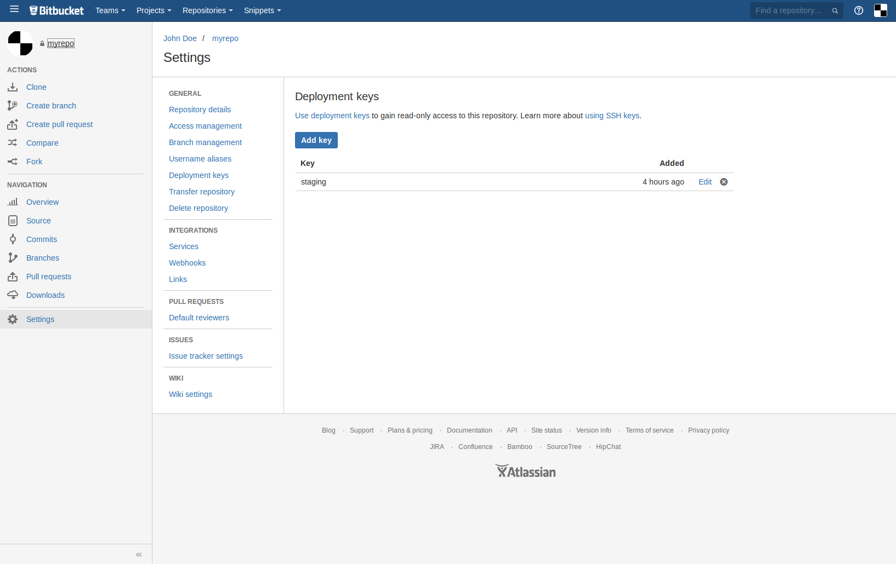

Intro
Cmdcenter has built in tools to manage application environments.
Each application environment lives inside a docker container.
Docker containers run inside an "appserver", check appserver documentation to learn more about it
Application environment configs
An app environement config lives in apps folder, under your organisation's data folder.
For example, if your organisation is called myorg, application environments live under $CMDCENTER_DATAHOME/myorg/apps/
Basic app environment template
Here is a minimal example of app config:
└── wiiiip_review
├── files
│ └── remote
│ ├── docker
│ │ ├── Dockerfile
│ │ └── start.sh
│ └── host
│ ├── git_deploy_key
│ └── git_deploy_key.pub
├── mongo.json
├── mysql.json
├── project.json
└── README
project.jsonis main app configmysql.jsonis an optional config where you list users and mysql databases your app needsmongo.jsonis an optional config where you list users and mongo databases your app needsfiles/remote/dockercontains theDockerfileandstart.shscriptfiles/remote/hostcontains files uploaded to remoteappserverhost, in our case it's readonly git deploy keys
1/ Create new application environment
So how do you allocate new app env ?
There is a command for that:
cmdcenter.py create app nodejs \
--name myapp_staging \
--domain staging.domain.tld \
--git git@bitbucket.org:user/myrepo.git \
--env staging \
--wwwdir "" \
--org myorg
myapp_stagingis the unique name of your application environmentnodejsis an env template for a nodejs appdomainis the main domain of your applicationgitis your private git repository urlenvis the name of environment you will be able to get it from your app usingENVIRONMENTandNODE_ENVsystem env variableswwwdirthis is an obsolete config, please ignore itorgif your organisation name, as usual
2/ Allow read only GIT access
At the end of the output rom the command above, you will see something like this:
Please add this read only deploy key to your git repository git@bitbucket.org:dchapkine/weeklybuild-goinfre.git
ssh-rsa AAAAAAAAAAAAAAAAAAAAAAAAAAAAAAAAAAAAAAAAAAAAAAAAAAAAAAAAAAAAAAAAAAAAAAAAAAAAAAAAAAAAAAAAAAAAAAAAAAAAAAAAAAAAAAAAAAAAAAAAAAAAAAAAAAAAAAAAAAAAAAAAAAAAAAAAAAAAAAAAAAAAAAAAAAAAAAAAAAAAAAAAAAAAAAAAAAAAAAAAAAAAAAAAAAAAAAAAAAAAAAAAAAAAAAAAAAAAAAAAAAAAAAAAAAAAAAAAAAAAAAAAAAAAAAAAAAAAAAAAAAAAAAAAAAAAAAAAAAAAAAAAAAAAAAAAAAAAAAAAAAAAAAAAAAAAAAAAAAAAAAAAAAAAAAAAAAAAAAAAAAAAAAAAAAAAAAAAAAAAAAAAAAAAAAAAAAAAAA admin@staging.domain.tld
app created successfuly
This is your deploy key, In the middle. You have to copy paste it into your repository settings.

3/ Add mysql database (optional)
I assume that you have at least one instance of mysql5server in your organisation, and that this server physicaly runs on same private network as your appserver instances.
Following guide assumes that:
myapp_stagingis the unique name of your application environmentmyapp_stagingis the unique name of your mysql databaseu8643356897is the login for the first mysql account suposed to access mysql via private networku3124555432is the login for the second mysql account suposed to access mysql via internetch@ngeThi5p4ssw0rdis a password for both of your mysql accountsaaa.bbb.ccc.dddis the IP of yourmysql5serverinstance on private networkzzz.eee.rrr.tttis the IP of yourmysql5serverinstance on public network
You must replace all this values by your own
To allocate new database for your application, you simply need to create mysql.json in your project's root directory:
{
"databases": [
{
"accounts": [
{
"username": "u8643356897",
"scope": "*",
"password": "ch@ngeThi5p4ssw0rd",
"ip": "aaa.bbb.ccc.ddd"
},
{
"username": "u3124555432",
"scope": "*",
"password": "ch@ngeThi5p4ssw0rd",
"ip": "zzz.eee.rrr.ttt"
}
],
"name": "myapp_staging"
}
],
"server": "mysql5server"
}
Now you need to apply this changes on your mysql5server instance by running the following command:
myorgis your organisation name
cmdcenter.py setup server mysql5server --step deploy --org myorg
Now you can connect to your mysql instance from your application using following credentials:
- ip: aaa.bbb.ccc.ddd
- port: 3306
- user: u8643356897
-
password: ch@ngeThi5p4ssw0rd
-
ip: zzz.eee.rrr.ttt
- port: 3306
- user: u3124555432
- password: ch@ngeThi5p4ssw0rd
4/ Add mongodb database (optional)
I assume that you have at least one instance of mongo3server in your organisation, and that this server physicaly runs on same private network as your appserver instances.
Following guide assumes that:
myapp_stagingis the unique name of your application environmentmyapp_stagingis the unique name of your mongo databaseu8643356897is the login for the first mongo account suposed to access mongo via private networku3124555432is the login for the second mongo account suposed to access mongo via private networkch@ngeThi5p4ssw0rdis a password for both of your mongo accountsaaa.bbb.ccc.dddis the IP of yourmongo3serverinstance on private networkzzz.eee.rrr.tttis the IP of yourmongo3serverinstance on public network
You must replace all this values by your own
To allocate new database for your application, you simply need to create mongo.json in your project's root directory:
{
"databases": [
{
"accounts": [
{
"username": "u8643356897",
"password": "ch@ngeThi5p4ssw0rd"
},
{
"username": "u3124555432",
"password": "ch@ngeThi5p4ssw0rd"
}
],
"name": "myapp_staging"
}
],
"server": "mongo3server"
}
Now you need to apply this changes on your mongo3server instance by running the following command:
myorgis your organisation name
cmdcenter.py setup server mongo3server --step deploy --org myorg
Now you can connect to your mongodb instance from your application using following credentials:
- ip: aaa.bbb.ccc.ddd
- port: 27017
- user: u8643356897
-
password: ch@ngeThi5p4ssw0rd
-
ip: aaa.bbb.ccc.ddd
- port: 27017
- user: u3124555432
- password: ch@ngeThi5p4ssw0rd
5/ Deploy your app
To deploy your app simply run the following command:
myorgis your organisation namemyapp_stagingis your application environment name
You must replace all this values by your own
cmdcenter.py deploy app myapp_staging --org myorg
6/ DNS
Last step is to redirect your application's domain to the IP addresse(s) of your appserver instance(s).